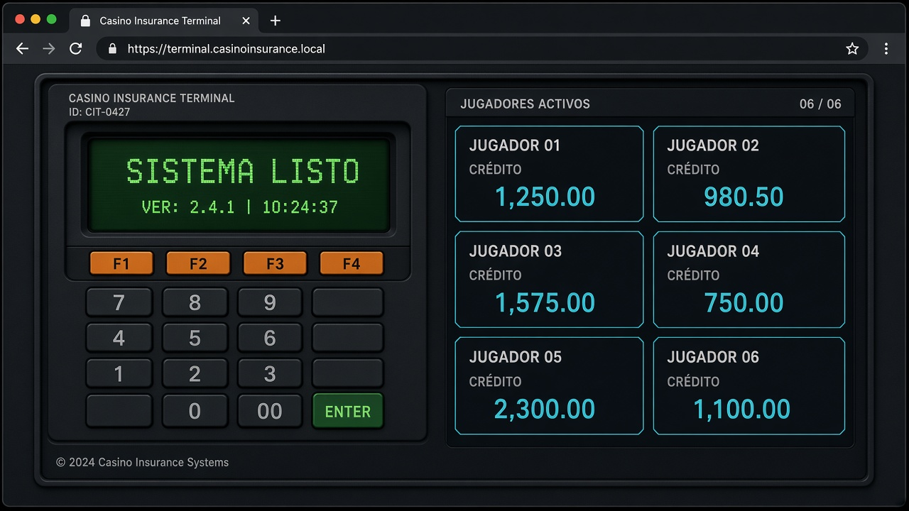
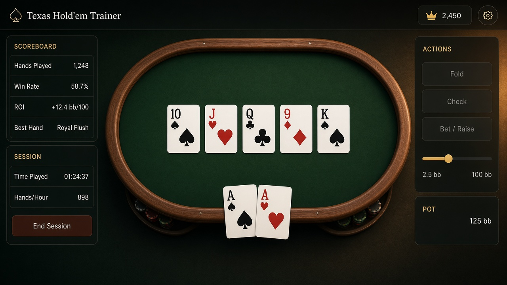

Máquina virtual de seguros
Terminal de 6 puestos para vender, marcar y reembolsar. Replica el ritmo de una máquina de mesa, con F1–F4 y un modo jefe para premios.

MVS Sistema listo F1 aceptar · F2 vender · F3 reembolsarFull Stack · Santiago
Diseño y programo simuladores de operación para capacitación. El flujo tiene que ser el real: teclas, estados y errores incluidos.

Proyectos
Terminal de 6 puestos para vender, marcar y reembolsar. Replica el ritmo de una máquina de mesa, con F1–F4 y un modo jefe para premios.

MVS Sistema listo F1 aceptar · F2 vender · F3 reembolsarElige las 5 mejores cartas entre comunitarias y tu mano. Estudio para revisar; entrenamiento para medir tiempo y precisión.

Hold'em 7 cartas · 1 respuesta Comunitarias + hole cardsOficio
Puedo trabajar en web o Android. Lo que no cambio es que el estado se vea y que un flujo largo no se rompa a mitad de camino.
Sobre mí
Estos simuladores salieron de un problema concreto: formar operadores sin sentarlos frente a una máquina de verdad. El mismo criterio lo uso en productos web y apps.
Contacto
navea.dev@gmail.comSi tienes un flujo que la gente tiene que aprender a usar, escríbeme. También estoy en GitHub.